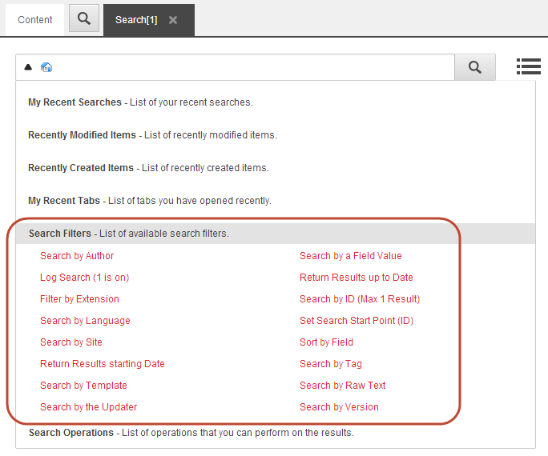

検索フィルター¶
Sitecoreで検索クエリを構築すると、Searchフィールドのドロップダウンメニューから以下の検索フィルタを選択することができます。
{kind=link}
フィルタを選択すると、そのフィルタが検索フィールドに挿入され、検索結果はそれに応じてフィルタリングされます。
検索フィルタ |
概要 |
編集者で検索 |
特定の作者が作成したアイテムを検索します。 |
ログ検索 (1 is on) |
単一の検索クエリのロギングをオンにします（1がオン、0がオフ）。 |
拡張子でフィルタリング |
特定の拡張子を持つアイテムを検索します。これは、メディアライブラリ内のファイルを検索する際に便利です。 |
言語で検索 |
特定の言語での選択 |
サイトで検索 |
特定のサイトのアイテムを検索します。これは、同じSitecoreインストール上に複数のサイトがある場合に便利です。 |
作成日で検索 |
特定の日付以降に作成されたアイテムを検索します。 |
テンプレートで検索 |
特定のテンプレートに基づいて項目を検索します。 |
バージョンで探す |
特定のバージョン番号のアイテムを検索します。 |
フィールドの値で検索 |
特定のフィールドで特定の値を持つアイテムを検索します。例えば、「タイトル」フィールドに「デザイン」という単語を持つすべてのアイテムを検索するには、「custom:title|design」と入力します。 |
最新の結果を表示する |
特定の日付またはそれ以前に作成されたアイテムを検索します。 |
IDで検索 (最大1件) |
特定のアイテムIDでアイテムを検索します。ID全体を入力する必要があります。 |
検索開始点(ID)の設定 |
特定の場所からアイテムを検索します。検索を開始する場所に特定のコンテンツアイテムIDを入力します。 |
フィールド別に並べ替え |
コロンの後に指定されたフィールドのテキストに基づいて項目を並べ替えます。選択されたフィールドは、トークン化されていない (アナライザを持たない) か、または KeywordTokenizer のような単一のタームのみを生成するアナライザを使用している必要があります。 |
タグで検索 |
特定のタグが付いている項目を検索します。 |
テキストで検索 |
特定のがを含む単語を探します。 |